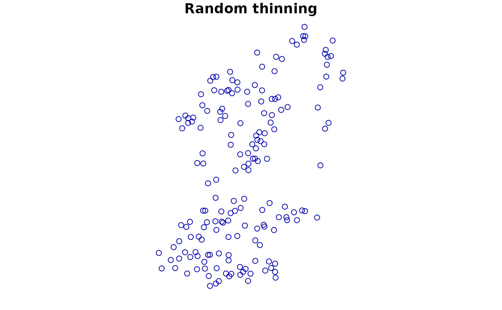
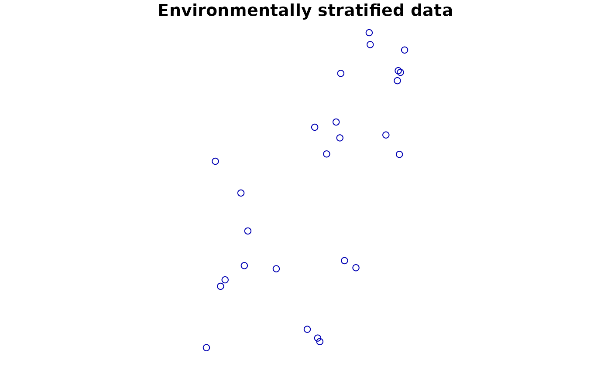
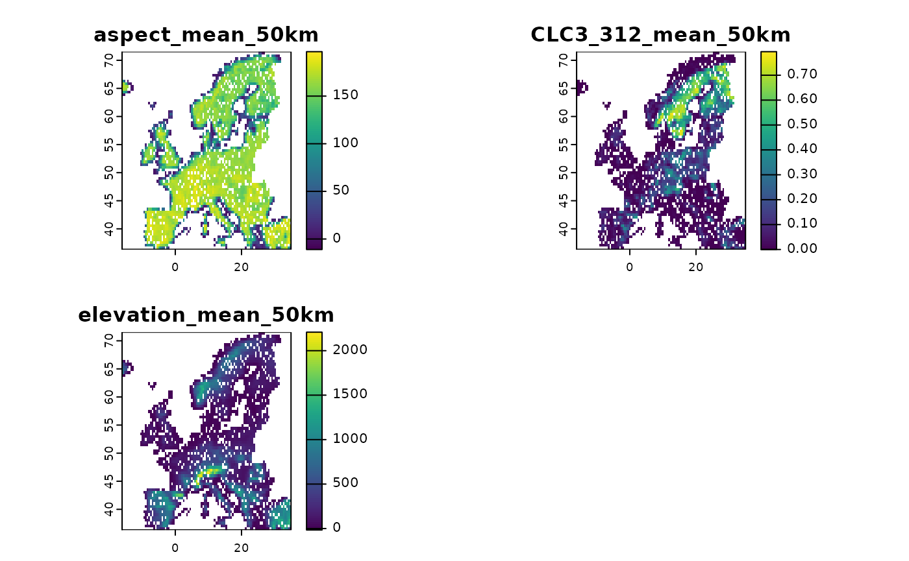
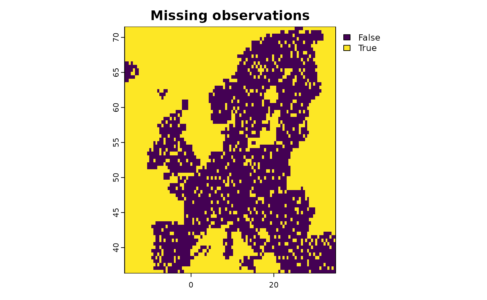

Preparation of biodiversity and predictor data
Martin Jung
2023-09-05
Source:vignettes/articles/01_data_preparationhelpers.Rmd
01_data_preparationhelpers.RmdThe first step with any species distribution modelling (SDM) is to
collect and prepare the necessary input data and parameters for the
modelling. Predictors or (environomental) covariates need to be
acquired, in many cases formatted, for example through masking and
reprojections, and standardized. Similarly, Biodiversity data are
usually collected through independent field survey or from available
databases such as GBIF. In particular for the ibis.iSDM
package it can furthermore be useful to collect any other information
available for a biodiversity feature (e.g. species, habitat, …) in
question. Such as for example broad delineation of an expert range or
parameters related to the habitat preference of a species.
Preparing input data for the ibis.iSDM package requires
a modest understanding of modern geospatial R-packages, such as
sf, terra and stars. If such
knowledge is not existing, it is advised to consult a search engine.
Particularly highlighted is the free Geocomputation with R book. Many
unexpected errors or patterns when using the package can usually be
tracked down to data preparation.
# Load the package
library(ibis.iSDM)
library(terra)
library(sf)
# Don't print out as many messages
options("ibis.setupmessages" = FALSE)Preparing and altering biodiversity data
SDM approaches require observation biodiversity data, typically in the form of presence-only or presence-absence data, which can be available in a range of different formats from points to polygons.
There are a range of existing
tools that assist modellers in preparing and cleaning input data
(for instance of biases). This vignette does intend to give an overview
of the options. Rather it highlights the few functions that have been
created specifically for the ibis.iSDM package and that
might help in some situations.
Adding pseudo-absence points to presence-only data
Although in the philosophy of the ibis.iSDM package it
is advisable to use presence-only models in a Poisson point process
modelling framework (‘poipo’ modelling functions that use background
points (see Warton and
Sheperd 2010). Yet, a good case can also be made to instead add
pseudo-absence points to existing presence-only data. This allows the
use of logistic regressions and ‘poipa’ methods in
ibis.iSDM which are generally easier to interpret (response
scale from 0 to 1) and also faster to fit as model.
## Lets load some testing data from the package
# Background layer
background <- terra::rast(system.file("extdata/europegrid_50km.tif",package = "ibis.iSDM", mustWork = TRUE))
# Load virtual species points
virtual_species <- sf::st_read(system.file("extdata/input_data.gpkg",package = "ibis.iSDM", mustWork = TRUE), "points",quiet = TRUE)
# Add a range
virtual_range <- sf::st_read(system.file('extdata/input_data.gpkg', package='ibis.iSDM'), 'range', quiet = TRUE)Adding pseudo-absence data in the ibis.iSDM package
works by first specifiying a Pseudoabsence options object that
contains parameters how many and where pseudo-absences are to be
sampled. The respective function for this is called
pseudoabs_settings(). Further details on the available
options here (there are many) can be found in the help file. By default
the packages uses a random sampling of absence points and the settings
for this can be queried here
ibis_options()$ibis.pseudoabsence.
After such options have been defined, pseudoa-absence data can be
added to any point dataset via add_pseudoabsence().
Example:
# Define new settings for sampling points outside the minimum convex polygon of
# the known presence data
abs <- pseudoabs_settings(background = background,
nrpoints = 1000, # Sample 1000 points
method = "mcp", # Option for minimum convex polygon
inside = FALSE # Sample exclusively outside
)
print( abs ) # See object, check abs$data for the options
# Now add to the point data
point1 <- add_pseudoabsence(virtual_species,
# Point to the column with the presence information
field_occurrence = 'Observed',
settings = abs)
plot(point1['Observed'])
# --- #
# Another option sampling inside the range, but biased by a bias layer
bias <- terra::rast(system.file("extdata/predictors/hmi_mean_50km.tif",
package = "ibis.iSDM", mustWork = TRUE))
abs <- pseudoabs_settings(background = background,
nrpoints = 100, # Sample 100 points
method = "range", # Define range as method
inside = TRUE, # Sample exclusively inside
layer = virtual_range, # Define the range
bias = bias # Set a bias layer
)
# Add again to the point data
point2 <- add_pseudoabsence(virtual_species,
# Point to the column with the presence information
field_occurrence = 'Observed',
settings = abs)
plot(point2['Observed'])
Thinning observations
Many presence-only records are often spatially highly biased with varying observational processes resulting in quite clustered point observations. For example, urban areas and natural sites near them are considerably more often frequented by citizens observed wildlife than sites in remote areas. Particular for Poisson process models that can be problematic as such models critically assume - without accounting for it - that the observational process is homogeneous in space.
Thinning observations is a method to remove point observations from
areas that have been “oversampled”. Critically however it does only
remove points from grid cells of a provided background where this is the
case and never removes the entire grid cell fully. It can also be
beneficial for model convergence and modelling speed, as particular for
well-sampled species (e.g. the common blackbird Turdus merula)
there are diminishing returns of fitting a SDM with like 1 million
presence-only points instead of just 20000 well separated ones. The
ibis.iSDM package has its own implementation for spatial
thinning, but one can also refer to Aiello-Lammens et al. for
an alternative implementation and rationale for thinning.
Thinning needs to be conducted with care as it effectively discards data!
## We use the data loaded in above
plot(virtual_species['Observed'], main = "Original data")
# Random thinning. Note the messages of number of thinned points
point1 <- thin_observations(df = virtual_species,
background = background,
method = 'random',
minpoints = 1 # Retain at minimum one point per grid cell!
)
#> (random) thinning completed!
#> Original number of records: 208
#> Number of retained records: 148
plot(point1['Observed'], main = "Random thinning")
# Another way: Use environmental thinning to retain enough points
# across the niche defined by a set of covariates
covariates <- terra::rast(list.files(system.file("extdata/predictors/", package = "ibis.iSDM", mustWork = TRUE), "*.tif",full.names = TRUE))
point2 <- thin_observations(df = virtual_species,
background = background,
env = covariates,
method = 'environmental',
minpoints = 5 # Retain at minimum five points!
)
#> (environmental) thinning completed!
#> Original number of records: 208
#> Number of retained records: 46
plot(point2['Observed'], main = "Environmentally stratified data")
Preparing and altering predictor data
In order to be used for species distribution modelling all predictors
need to be provided in a common extent, grain size and geographic
projections. They need to align with the provided background extent to
distribution() and should ideally not contain no missing
data. If there are missing data, the package will check and remove
during model fitting points that fall into any grid cells with missing
data.
The ibis.iSDM package has a number of convenience
functions to modify input predictors. These functions rather provide
nuance(s) and variation to the modelling process, rather than preparing
the input data (which needs to be undertaken using the
terra package).
# Load some test covariates
predictors <- terra::rast(list.files(system.file("extdata/predictors/", package = "ibis.iSDM", mustWork = TRUE), "*.tif",full.names = TRUE))Transforming predictors
For better model convergence it usually makes sense to bring all
predictors to a common unit, for example by noramlizing or scaling them.
The ibis.iSDM package has a convenience function that can
be applied to any terra ‘SpatRaster’ object.
NOTE: This functionality are also available directly in
add_predictors() as parameter!
# Let's take a simple layer for an example
layer <- predictors$bio19_mean_50km
# Transform it in various way
new1 <- predictor_transform(layer, option = "norm")
new2 <- predictor_transform(layer, option = "scale")
new <- c(layer, new1, new2)
names(new) <- c("original", "normalized", "scaled")
terra::plot( new )
# Another common use case is to windsorize a layer, for example by removing
# top outliers form a prediction.
# Here the values are capped to a defined percentile
new3 <- predictor_transform(layer, option = "windsor",
# Clamp the upper values to the 90% percentile
windsor_props = c(0,.9))
new <- c(layer, new3)
names(new) <- c("original", "windsorized")
terra::plot( new )
Other options for transformation are also available and are listed in the methods file.
Derivates of predictors
A simple linear SDM (e.g. engine_glmnet()) includes the
predictors as such and thus assumes that any increase in the response
variable follows a linear relationship with the covariate. However,
reality is not always that simple and usually it can be assumed that
many relationships are highly non-linear or otherwise complex.
A standard way to introduce non-linearities to a linear algorithm is
to create derivates of predictors, such as for example a quadratic
transformation of temperature. The ibis.iSDM package has a
convenience function that can be applied to any terra
‘SpatRaster’ object to create such additional derivates for a model.
Note that this creates (in some cases substantial) additional
predictors.
NOTE: This functionality are also available directly in
add_predictors() as parameter!
# Let's take a simple layer for an example
layer <- predictors$ndvi_mean_50km
# Make a quadratic transformation
new1 <- predictor_derivate(layer, option = "quadratic")
new <- c(layer, new1)
names(new) <- c("original", "quadratic")
terra::plot( new )
# Create some hinge transformations
new2 <- predictor_derivate(layer, option = "hinge",
# The number is controlled by the number of knots
nknots = 4
)
terra::plot( new2 )
# What does this do precisely?
# Lets check
df <- data.frame( ndvi = terra::values(layer),
terra::values(new2))
plot(df$ndvi_mean_50km, df[,2], ylab = "First hinge of ndvi", xlab = "NDVI")
plot(df$ndvi_mean_50km, df[,3], ylab = "Second hinge of ndvi",xlab = "NDVI")
plot(df$ndvi_mean_50km, df[,4], ylab = "Third hinge of ndvi", xlab = "NDVI")
plot(df$ndvi_mean_50km, df[,5], ylab = "Fourth hinge of ndvi",xlab = "NDVI")
More fine-tuned control can also be achieved by creating specific interactions among variables, for example if one expects climate to interact with forest cover.
# Create interacting variables
new <- predictor_derivate(predictors,option = "interaction",
int_variables = c("bio01_mean_50km", "CLC3_312_mean_50km"))
plot(new, main = "Interaction variable")
Homogenize missing data among predictors
As mentioned above, during model training covariates will be
extracted for each biodiversity observational record. Missing data will
in this case be discarded. For example if 10 predictors are considered
and a single one has a missing value in one grid cell, the grid cell is
considered missing among all other predictors as well. The
ibis.iSDM package has some convenience functions to easily
harmonize and check the extent of missing data in a set of predictors
which can be convenient for assessing errors during data
preparation.
# Make a subset of all predictors to show the concept
layers <- subset(predictors, c("aspect_mean_50km",
"CLC3_312_mean_50km",
"elevation_mean_50km"))
# All these layers have identical data coverage.
# Now add missing data in one of the layers for testing
layers$CLC3_312_mean_50km[sample(1:ncell(layers), 1000)] <- NA
# Harmonize the predictors
new <- predictor_homogenize_na(env = layers)
# Now all the predictors have identical coverage of NA values
terra::plot(new)
